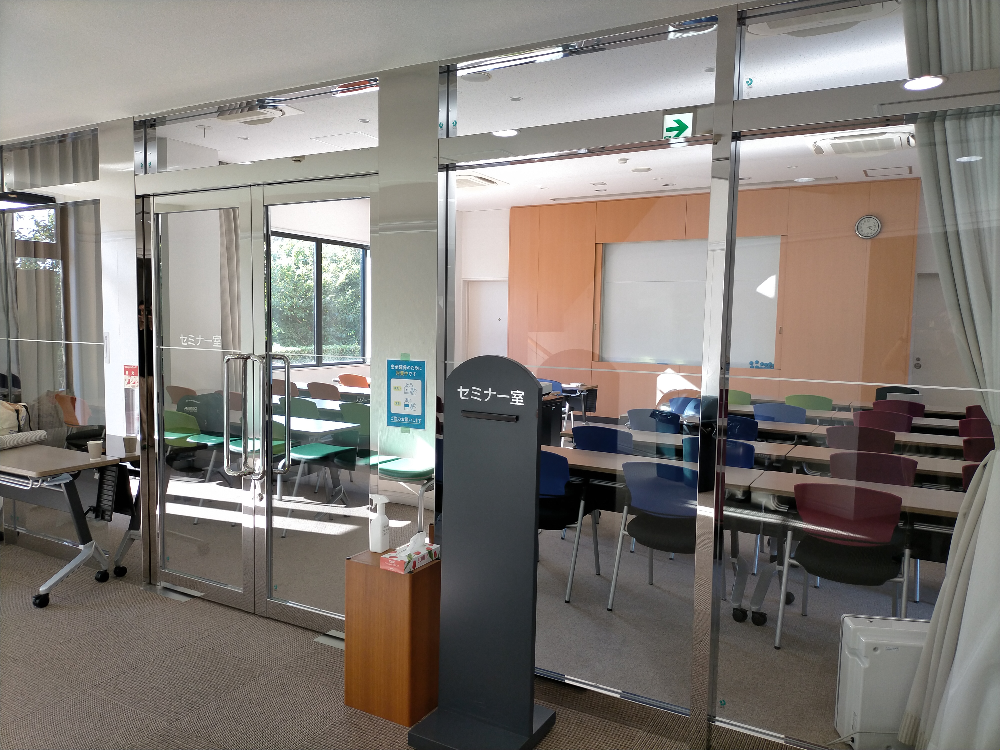
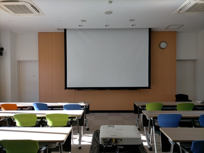
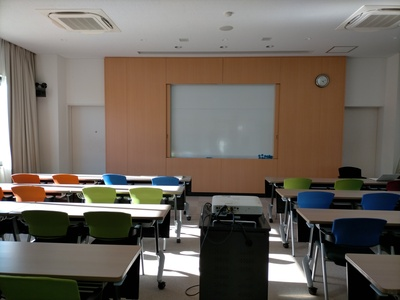

計算・言語・論理の研究集会 2024 御宿
基本情報
- 日時
- 2024年9月26日（木）17:00 から 2024年9月29日（日）10:00 まで
- 場所
- 千葉工業大学御宿研修センター（「利用ガイド」をご一読ください）
- 少し坂を登った先にきちんとした門があるのでそこから入ってください
- 千葉県夷隅郡御宿町岩和田1320
- JR外房線御宿駅下車、徒歩18分
-
- 参加費
- 無料。ただし、宿泊・飲食を伴う場合は実費を別途徴収します。
参加予定者（記載希望者のみ）（部分参加含む）（2024年9月10日現在）
- 谷口雅弥
- 中澤巧爾
- LEE Yeonseok（リ ヨンソク）
- 間庭彬仁
- 高木翼
- 木村大輔
- 早乙女献自
- 佐藤拓海
- 鈴木悠大
- 安部達也
講演（順次追加）
講演者向け情報
- セミナールーム、スクリーン・プロジェクタ（HDMI）
-  
- ホワイトボード（メイン）、ホワイトボード（サブ）
- 

開催履歴
2023
連絡先
世話人 安部達也 ⟨(λX.abe.XaXsuya@iX-chiba.ac.jp)t⟩